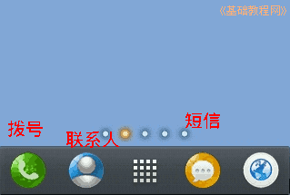
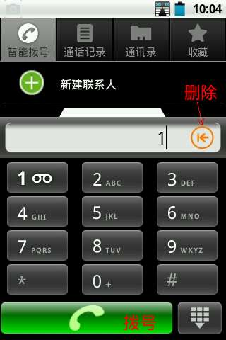
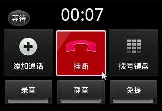
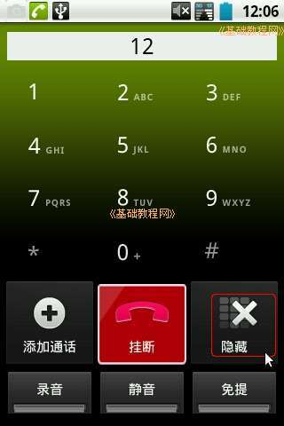
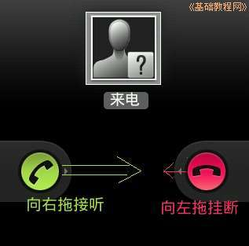
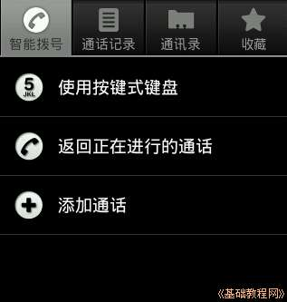

Android 安卓智能手机操作教程
作者：TeliuTe 来源：基础教程网
二、拨打电话、短信 返回目录 下一课电话功能在屏幕下边的第一排固定按钮中；
1、拨打、接听电话
1）触按下边第一个电话听筒按钮，就会显示数字拨号器界面；

2）触按输入电话号码，输错了按右边的删除按钮，检查无误，按下面的绿色按钮拨出号码；

3）此时听筒中可以听到拨号音，也可以按右下角的“免提”，使用喇叭放音，声音更大更清楚；
4）挂断电话，按一下中间的红色“挂断”按钮即可，此时将返回到拨号界面，按右下角“返回”按钮回到待机屏幕；

5）如果是客服类电话，需要按提示的数字，按一下右边的“拨号键盘”就会出来数字按键，再按一下关闭；

6）要接听电话时，屏幕上会显示两个电话图标，轻轻按住左边绿色的，拖到右边接听，按红色的拖到左边拒绝来电；

7）如果打电话过程中，不小心按了返回键找不到界面，就再按一下左下角拨号按钮，选择返回正在进行的通话，旁边是一个电话图标；

本节学习了拨打、接听电话的基础知识，如果你成功地完成了练习，请继续学习下一课内容；
本教程由86团学校TeliuTe制作|著作权所有
基础教程网：http://teliute.org/
美丽的校园……
转载和引用本站内容，请保留作者和本站链接。